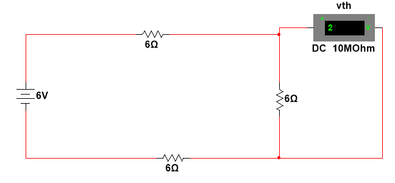
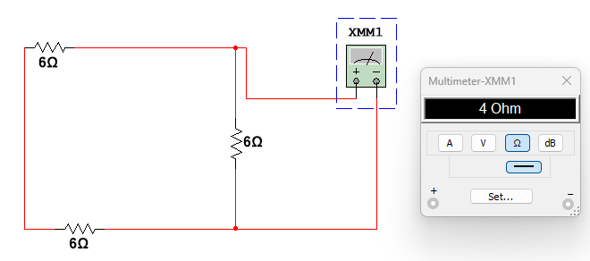

2. Merge the 2 voltage sources: (12v-6v)=6v.

3. To find V thevenin: keep circuit open and apply KVL or V=IR(R is a bunch of series resistors). The concept behind this is: voltage stays the same if the circuit remains closed. The purpose of thevenin equivalent is to simulate what a circuit acts like when connected to something, not when it’s on its own. This changes the effective voltage value. Anything connected will experience 2v at the top right node(this is v oc). We can apply ohm's law to the loop to find the voltage at each connection point (6v=18ohm*I); I=1/3A, vth=6*⅓=2v.
4. To find R thevenin: short the circuit then find equivalent resistance. If there is a current flowing into the device it will experience an effective resistance value. (12 ohm parallel with 6 ohm): product over sum: R equivalent=(12*6)/(12+6)=4 ohms.

5. note: the ohmeter calculates resistance by running a current through the wire. this acts opposite the current created by the voltage source, so we can safely remove it in multisim to find the value we want.